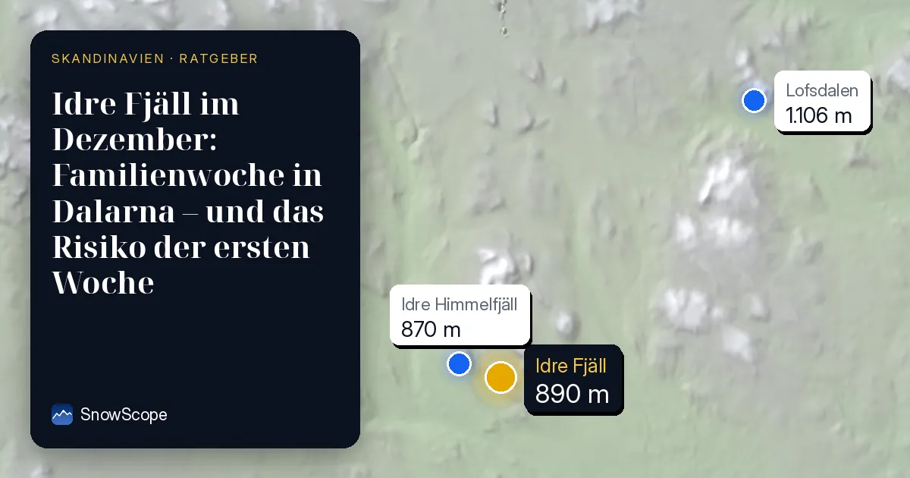

Idre Fjäll im Dezember: Familienwoche in Dalarna – und das Risiko der ersten Woche
Idre Fjäll ist ein Familienliebling im Norden Dalarnas, mit 34 km kartierten Pisten und 24 Liften auf einem niedrigen, breiten Fjell. Für den Dezember ist die Kernzahl aus unserer Schneehistorie über 46 Winter bescheiden: An einem typischen 15. Dezember liegen an der Mittelstation (733 m) 32 cm, knapp über den 30 cm, die wir als Grenze für „guten Schnee“ nutzen.
Die Live-Schneeprognose für Idre Fjäll in der SnowScope-AppSchneehöhen, Pulverschnee-Alarme und 3D-Karte, gratis.
Was wir über die Kosten sagen können
Weniger, als wir möchten. Idre Fjäll veröffentlicht seine Preise über herunterladbare Listen und einen Buchungskalender, und am 13. November 2026 konnten wir keinen festen Skipassbetrag ablesen, dessen wir sicher waren. Deshalb nennen wir keinen. Wir können aber zeigen, wie du mit den Schneezahlen vermeidest, für eine Woche ohne Schnee zu zahlen.


Was du bekommst: Schnee
Der Anteil der Winter mit mindestens 30 cm an der Mittelstation liegt bei 39 % vom 1. bis 7. Dezember, 52 % vom 8. bis 14., 65 % vom 15. bis 21. und 76 % in der Weihnachtswoche. Am Gipfel (888 m) sind es 50, 59, 65 und 83 %. Der übliche erste Tag mit 30 cm an der Mittelstation ist der 7. Dezember.
Tief ist Idre im Dezember nie: Nur 9 % der Winter hatten in der Weihnachtswoche 60 cm oder mehr an der Mittelstation. Aper ist es aber auch selten – in keinem unserer 46 Winter war der Boden an der Talstation am 15. Dezember schneefrei.
Hat sich der Dezember verändert?
Ja. Das Dezembermittel an der Mittelstation fiel von 39 cm in den ersten 15 Wintern auf 29 cm in den letzten 15, und der Anteil der Weihnachtswochen mit 30 cm dort sank von 87 % auf 60 %. Im letzten Winter lagen am 15. Dezember 28 cm und am 24. Dezember 22 cm: dünn, aber auf präparierten Pisten fahrbar.
Für eine Familienreise heißt das: Die erste Dezemberwoche ist ein Glücksspiel, die Woche vor Weihnachten eine faire Wette, die Weihnachtswoche die beste des Monats.
Sälen als Plan B?
Sälen weiter südlich in Dalarna ist die naheliegende Alternative – und nicht sicherer. Seine runden Hügel ergeben einen Wert für das ganze Gebiet: 28 cm an einem typischen 15. Dezember und 48 % der Winter mit 30 cm in der Woche vom 15. bis 21. Dezember. Auch dort sind die Preise dynamisch, einen festen Betrag konnten wir nicht ablesen.
Im Dezember ist Idre das etwas bessere der beiden. Wer für eine fixe Woche Sicherheit braucht, schaut nach Nordwesten in die höheren norwegischen oder schwedischen Berge.
Tipps für Skifahrer
- Die erste Dezemberwoche meiden: Nur 39 % unserer Winter hatten dann 30 cm an der Mittelstation.
- Bei festen Terminen die Woche vor Weihnachten oder die Weihnachtswoche selbst wählen.
- Vor der Buchung die Preisliste für deine genauen Tage beim Skigebiet anfragen; wir konnten keinen Betrag bestätigen.
- Kurze Tage und echte Kälte: den Tag nach dem Licht planen und Kinder im Zwiebellook anziehen.
Weitere Karten (externe Seiten)
Quellen und Nachweise
- Idre Fjäll: official lift-pass page of the operator (prices by date; no fixed price quoted), checked 13 November 2026 www.idrefjall.se/en/about-us/information/prices/
- Sälen: official lift-pass page of the operator (prices by date; no fixed price quoted), checked 13 November 2026 www.skistar.com/en/winter/skipass/buy-skipass/lift-pass-salen/
Zu diesen Zahlen
Schneewerte: SnowScope-Schneehistorie, 46 vergangene Winter (1980-81 bis 2025-26) auf den Höhen des Skigebiets, höhenkorrigiert (eine Schätzung für eine Fläche, keine Meldungen des Skigebiets); „guter Schnee“ = im Wochenmittel 30 cm oder mehr am Boden. Karte: unsere übliche Schneehöhe am 15. Dezember, nach Höhe auf das Gelände verteilt. Pisten und Lifte: OpenSkiMap-Kartierung. Skipasspreise: offizielle Preislisten der Skigebiete, geprüft am 13. November 2026; Preise können sich ändern.
Offizielle Lawinenlageberichte: Lavinprognoser (Naturvårdsverket)
Diesen Bericht zitieren
Für Forschung, Lehre oder Presse: Zahlen und Grafiken sind unter CC BY 4.0 mit dieser Quellenangabe frei nutzbar.
SnowScope (2026), Idre Fjäll im Dezember: Familienwoche in Dalarna – und das Risiko der ersten Woche, https://snowscope.app/blog/de/2026/11/idre-fjall-december-family-ski-budget-sweden.html, abgerufen am 2026-11-14
SnowScope (Atlas Labs). (2026, November 14). Idre Fjäll im Dezember: Familienwoche in Dalarna – und das Risiko der ersten Woche. SnowScope snow reports. https://snowscope.app/blog/de/2026/11/idre-fjall-december-family-ski-budget-sweden.html
BibTeX
@misc{snowscope2026idrefjalldecemberfamilys,
author = {{SnowScope (Atlas Labs)}},
title = {Idre Fjäll im Dezember: Familienwoche in Dalarna – und das Risiko der ersten Woche},
year = {2026},
month = nov,
howpublished = {\url{https://snowscope.app/blog/de/2026/11/idre-fjall-december-family-ski-budget-sweden.html}},
note = {Published 2026-11-14 20:11 UTC; accessed 2026-11-14}
}· CC BY 4.0 · Methoden, Daten und Werkzeuge →
Idre Fjäll: Schnee und Temperatur nach Höhe, dieser Winter vs letzter (Werkzeuge) →
Idre Fjäll folgen
Gratis: eine Nachricht, wenn Neuschnee kommt, und jeden Morgen die Vorhersage.